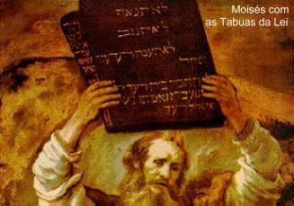
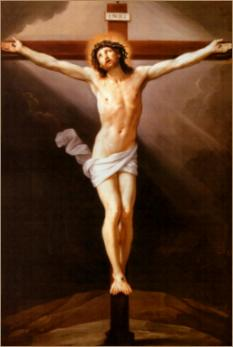

DEUS fez a criatura
ser perfeito. O equilíbrio interior, a posição harmoniosa 
Para um melhor entendimento, vamos acompanhar as manifestações da “Graça Divina”, no Antigo e no Novo Testamento.
ANTIGO TESTAMENTO
No início o CRIADOR revelou-se como o DEUS da graça e da misericórdia, demonstrando amor para com o seu povo, não porque ele merecesse, mas por causa da Sua Divina fidelidade ( hesed) à promessa que ELE Mesmo fez a Abraão, Isaac e Jacó. (Gn 18, 17-19) e (Gn 22, 15-19).
O reino de DEUS concretiza-se através da Aliança feita por JAVÉ com o povo eleito, o povo judeu. A “Graça” situa-se dentro do relacionamento pessoal entre o povo e JAVÉ e é representada pela “Benção Divina” , ou seja, a promessa do SENHOR multiplicar a vida dos judeus, tanto na existência terrena como a vida após a morte, sendo as criaturas tão felizes na Terra como no Céu. (Sl 89, 29-30)
Mas para que pudessem alcançar esta “Benção”, JAVÉ exigia que tivessem uma fé sincera, que o povo eleito se abrisse a DEUS e fizesse sua entrega pessoal, inclusive da própria vida. (Dt 30,19-20) Como resultado, a “Benção” produziria de certa forma a “justificação” (o perdão dos pecados) do fiel perante o SENHOR, fazendo com que ele fosse “reto” , isto é, fosse digno das promessas Divinas e das manifestações misericordiosas que emanavam da bondade do CRIADOR. (Dt 6,17-19) . Dessa forma, a “Benção” prometida é a “Graça” do SENHOR para Abraão e o povo eleito, e concretizava-se na Aliança de DEUS com os patriarcas e os israelitas. (Ex 34,10) (Sl 103, 8)
Na Aliança celebrada no Sinai, a promessa da “Benção” e salvação do povo judeu ficou condicionada à livre aceitação por parte dos israelitas, dos Mandamentos de DEUS, e naturalmente, de sua observância cotidiana. Assim, o Decálogo (Os Dez Mandamentos) evidenciou sua real importância e a necessidade das pessoas se portarem com dignidade, organizando a vida e seguindo a Lei como norma de viver, para que fossem merecedoras da “Benção” Divina. (Dt 7, 9-14) (Sl 112,1-2)
Assim sendo, a “Graça”, representada pela “Benção” recebida, significava o Amor do PAI aos que LHE eram fieis que procuravam corresponder em amor humano à grandeza do Amor Divino. (Sl 25, 6-7) (Sl, 24, 5-6) (Is 63,7-8)
Muito embora, em algumas oportunidades a “Benção” fosse apresentada como a “salvação messiânica”, ou seja, relacionada com a vinda do Messias que acabou com a injustiça e o desamor através dos ensinamentos Divinos, não deixa de ser uma manifestação do Amor de DEUS, porque segundo os avisos e as profecias, a vinda do Salvador propiciou ao povo uma paz verdadeira, fazendo nascer um fraterno e proveitoso relacionamento entre as pessoas em si, e entre elas e o CRIADOR. (Sl 132, 8-10) (Is 7, 14) (Is 9, 1-6) (Is 11, 1-9) (Is 28, 16-17)
Então, a “Benção” era um dom muito especial que paternalmente o SENHOR DEUS conferiu à humanidade e que realizava uma união mais íntima entre o CRIADOR e suas criaturas, propiciando-lhes amor, benevolência e misericórdia. (Sl 66,16-20)
Por outro lado, a “resposta” das pessoas deveria suceder por uma decidida entrega a DEUS na fé, que incessantemente professada e estimulada, transpunha a esfera existencial humana e alcançava o PAI ETERNO. Com isso, a criatura tornava-se “reta” aos olhos do SENHOR, porque se afastando do pecado, revelava que se submeteu a um sincero processo de conversão e conseguia de certa forma, a sua “justificação” perante o CRIADOR e inclusive, o dom da própria salvação, porque se tornava uma criatura que agia conforme a vontade Divina, caminhando para ser de fato, à imagem e à semelhança de DEUS.
Embora esta mencionada “justificação” dava segurança e salvação ao fiel, ela não tem a grandeza e nem o valor da “verdadeira justificação” alcançada por JESUS com a Obra de Redenção da humanidade, quando derramou o seu Sagrado e Precioso Sangue na Cruz, lavando os pecados de todas as gerações.
NOVO TESTAMENTO
Aqui a
“Graça” gerada pelo precioso e sagrado
sangue derramado na Cruz, 
As pessoas recebem a “Graça” Divina através dos Sacramentos. É assim, que pelo Sacramento do Batismo, os catecúmenos recebem o primeiro sacramento da iniciação cristã, são santificados em JESUS CRISTO pela vontade do PAI ETERNO e pela ação renovadora do ESPÍRITO SANTO, que coloca e estimula a “Graça” no interior de cada fiel.
Os demais sacramentos são recebidos depois do Batismo e cada qual, tem a sua “Graça” específica, que o ESPÍRITO DO SENHOR concede as criaturas, sempre com o mesmo objetivo, de santificar o povo de DEUS.
Pelos evangelhos sinópticos (Mateus, Marcos e Lucas), observamos também que a “Graça” é manifestada nos muitos milagres que JESUS fez: exorcizando os possessos, curando cegos, coxos, epilépticos e todos os tipos de enfermidades e até ressuscitando pessoas mortas. (Mt 4, 23) (Mt 9, 18-26) (Lc 7, 11-16) Revela ainda, que a “Graça” beneficia os perdidos e marginalizados com um amor de misericórdia, que abrange todos, sem distinção, colocando em destaque o valor da pessoa humana, da mesma forma que fraternalmente convida as pessoas ao aprimoramento do conhecimento de DEUS como o PAI amoroso que verdadeiramente ELE é e as criaturas como verdadeiros irmãos, filhos deste mesmo PAI repleto de bondade, ao qual temos acesso por meio de JESUS.
Em São João Evangelista, a “Graça” é a Vida que procede de DEUS: do PAI, do FILHO e do ESPÍRITO SANTO. JESUS disse: “EU sou o Caminho, a Verdade e a Vida”... (Jo 14,6) Então podemos compreender que a Vida é uma “Graça Especial” que emana de NOSSO SENHOR JESUS CRISTO.
Em São Paulo, a “Graça” está ligada estreitamente com a “justificação” , ou seja, com o perdão dos pecados. A morte cruenta de JESUS na Cruz foi o arcano instrumento usado pelo PAI ETERNO, para “justificar” e redimir o pecador, oferecendo-lhe a salvação definitiva, abrindo-lhe as portas do Céu. (Rm 3, 24)
São Paulo também nos revela em suas epístolas, uma quantidade admirável de carismas que as pessoas recebem como Dom Divino, que na verdade são “Graças Especiais" necessárias à existência das pessoas e elas tem origem na comunhão de amor eterno que existe entre o PAI e o FILHO pela ação do ESPÍRITO SANTO. (1 Cor 12, 4-11)
Entretanto, é importante não entender a “Graça” de modo incorreto. Sim, porque ela não é uma manipulação que transporta o fiel para a esfera de DEUS, como se fosse uma mágica. Não é assim. Ela só acontece, atua e salva as pessoas que tem “Fé”. É um dom preciosíssimo cuja intensidade cresce tantas vezes, quanto maior for à grandeza da “Fé” de quem a recebe. São Paulo define este acontecimento assim:
“O justo vive pela fé”. (Rm 1,17) e (Gl 3,11)